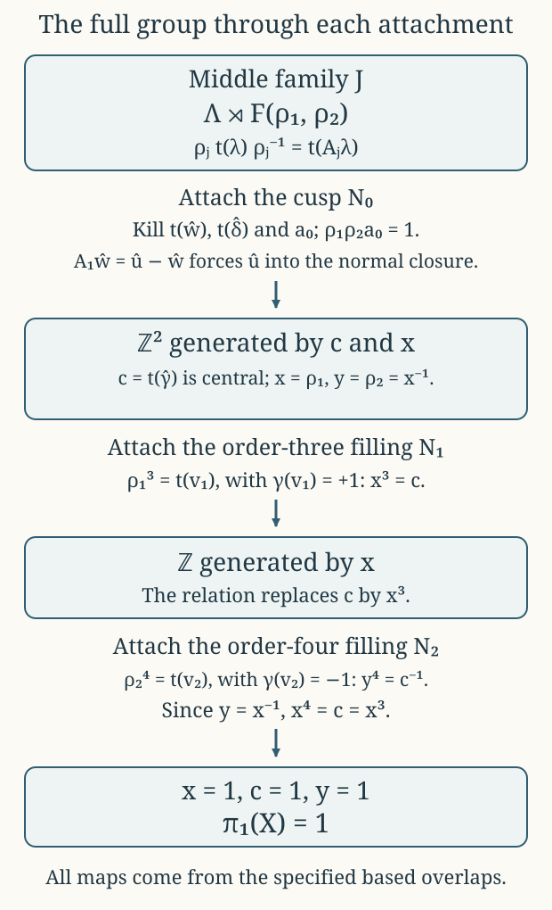

Integral monodromy and the fundamental group
CG-S6 · Lesson 6
The compact complex threefold constructed in lesson 5 is simply connected. We prove this using its actual attachment maps. The original lattice, the clockwise meridians, the affine translation vectors and the cusp units stay fixed throughout. We also compute the integral invariant and coinvariant lattices needed in the following homology lesson.
The spaces \(N_1,N_2\) are the varying finite fillings of lesson 3, and \(N_0\) is the cusp quotient of lesson 5. Write \(J=f^{-1}(B^\circ)\), where \(B^\circ=\mathbb P^1\setminus\{0,1,\infty\}\). The full construction is \(X=J\cup N_0\cup N_1\cup N_2\), with the explicit overlap maps already proved in those lessons.
1. The unchanged integral representation
Retain the ordered dual lattices
\[ \Lambda=\mathbb Z\langle\widehat\gamma,\widehat u,\widehat w,\widehat\delta\rangle, \qquad V=\operatorname{Hom}(\Lambda,\mathbb Z) =\mathbb Z\langle\gamma,u,w,\delta\rangle. \tag{1.1} \]
Vectors in both displayed bases are columns. A covector column \(\alpha\) evaluates on \(\lambda\) as \(\alpha^{\mathsf t}\lambda\). The original deck conjugation matrices are
\[ A_1=\begin{pmatrix} 1&0&0&0\\6&0&1&0\\-6&-1&-1&0\\-2&1&0&1 \end{pmatrix}, \qquad A_2=\begin{pmatrix} 1&0&0&0\\0&0&-1&0\\-6&1&0&0\\3&0&1&1 \end{pmatrix}. \tag{1.2} \]
The associated action on covectors is \(T_j=(A_j^{-1})^{\mathsf t}\). This precise inverse transpose is required by \((T_j\alpha)^{\mathsf t}(A_j\lambda)=\alpha^{\mathsf t}\lambda\). It gives
\[ T_1=\begin{pmatrix} 1&0&-6&2\\0&-1&1&1\\0&-1&0&1\\0&0&0&1 \end{pmatrix}, \qquad T_2=\begin{pmatrix} 1&6&0&-3\\0&0&-1&1\\0&1&0&0\\0&0&0&1 \end{pmatrix}. \tag{1.3} \]
For the clockwise cusp generator, put
\[ \begin{gathered} M_0=(A_1A_2)^{-1} =\begin{pmatrix} 1&0&0&0\\0&1&0&0\\0&1&1&0\\-1&0&0&1 \end{pmatrix},\\ T_0=(M_0^{-1})^{\mathsf t} =\begin{pmatrix} 1&0&0&1\\0&1&-1&0\\0&0&1&0\\0&0&0&1 \end{pmatrix}. \end{gathered} \tag{1.4} \]
These are representations in the stated marking, with the generator convention specified by conjugation in (4.2) below. Reversing a meridian replaces its matrix by its inverse; changing a based path can further conjugate it. Section 8 gives an exact comparison with a counterclockwise convention.
Proposition 1.1. The orders are exactly \(3,4\), and the full product and cusp identities are
\[ A_1^3=A_2^4=I,\qquad A_1A_2M_0=I,\qquad T_1T_2T_0=I,\qquad (M_0-I)^2=(T_0-I)^2=0. \tag{1.5} \]
Moreover
\[ \ker(M_0-I)=\operatorname{im}(M_0-I) =\Lambda_{\rm tor} :=\mathbb Z\widehat w\oplus\mathbb Z\widehat\delta. \tag{1.6} \]
Proof. The complete intermediate powers of the covector matrices are
\[ \begin{gathered} T_1^2= \begin{pmatrix}1&6&-6&-2\\0&0&-1&1\\0&1&-1&0\\0&0&0&1\end{pmatrix}, \\ T_2^2= \begin{pmatrix}1&6&-6&0\\0&-1&0&1\\0&0&-1&1\\0&0&0&1\end{pmatrix}, \qquad T_2^3= \begin{pmatrix}1&0&-6&3\\0&0&1&0\\0&-1&0&1\\0&0&0&1\end{pmatrix}. \end{gathered} \tag{1.7} \]
Multiplying by the respective original matrix gives the identity. Since \(T_1\ne I\) and \(T_2^2\ne I\), their orders are exactly \(3,4\), as are the inverse transposes. Direct multiplication gives
\[ T_1T_2= \begin{pmatrix}1&0&0&-1\\0&1&1&0\\0&0&1&0\\0&0&0&1\end{pmatrix}. \tag{1.8} \]
Its inverse is (1.4). Finally \((M_0-I)(a,b,c,d)^{\mathsf t}=(0,0,b,-a)^{\mathsf t}\). This proves (1.6), both inclusions integrally, and its square is zero. The corresponding formula for \(T_0-I\) is \((d,-c,0,0)^{\mathsf t}\), proving its square is zero. The subgroup (1.6) is saturated: its quotient has the free basis \([\widehat\gamma],[\widehat u]\). ∎
2. Exterior powers without losing the integral lattices
Write products such as \(\gamma u\) for wedge products, in the displayed order. The cohomology of the marked real torus \(\mathbb R^4/\Lambda\) is the exterior algebra \(\bigwedge^*V\). One can see the integral bases directly from its product of four circles: each circle has one vertex and one edge with zero cellular boundary. Their product has one oriented cell for every subset of the four edges; each pair of opposite faces cancels, so every boundary map is zero. Products of the four integral degree-one classes evaluate as \(+1\) on the correspondingly ordered coordinate subtori, with the sign of the permutation for another order. They therefore give the complete integral cohomology basis and its exterior multiplication. This also proves that a marked lattice map acts in degree \(k\) by its \(k\)-th exterior power.
Use the exact ordered bases
\[ \begin{aligned} \mathcal V_2&=(\gamma u,\gamma w,\gamma\delta,uw,u\delta,w\delta),\\ \mathcal V_3&=(\gamma uw,\gamma u\delta,\gamma w\delta,uw\delta),\\ \operatorname{vol}&=\gamma uw\delta. \end{aligned} \tag{2.1} \]
Theorem 2.1. The cusp invariants are the following full integral lattices:
\[ \begin{aligned} V^{T_0}&=\mathbb Z\langle\gamma,u\rangle,\\ (\textstyle\bigwedge^2V)^{T_0} &=\mathbb Z\langle\gamma u,\gamma\delta,uw,\gamma w-u\delta\rangle,\\ (\textstyle\bigwedge^3V)^{T_0} &=\mathbb Z\langle\gamma uw,\gamma u\delta\rangle. \end{aligned} \tag{2.2} \]
The invariant ranks in degrees zero through four are \(1,2,4,2,1\), and every invariant lattice is saturated.
Proof. The action on the four generators is \(T_0\gamma=\gamma,\ T_0u=u,\ T_0w=w-u,\ T_0\delta=\delta+\gamma\). Thus its fixed vectors in degree one have their \(w,\delta\) coefficients zero. In the basis \(\mathcal V_2\), direct expansion gives
\[ (\textstyle\bigwedge^2T_0-I)(a,b,c,d,e,f)^{\mathsf t} =(-b-e+f,-f,0,0,-f,0)^{\mathsf t}. \tag{2.3} \]
The exact conditions are \(f=0,\ e=-b\), with \(a,b,c,d\) arbitrary integers. They give precisely (2.2). In degree three the corresponding difference is
\[ (\textstyle\bigwedge^3T_0-I)(a,b,c,d)^{\mathsf t} =(d,-c,0,0)^{\mathsf t}, \tag{2.4} \]
so the first two basis vectors span the kernel. Degrees zero and four are fixed because \(\det T_0=1\). Finally a kernel of a map between free abelian groups is saturated: if an integer multiple \(nv\), \(n\ne0\), is in the kernel, its image is annihilated by \(n\) in a torsion-free group, and hence the image of \(v\) is zero. This proves the last assertion without replacing the lattices by real vector spaces. ∎
Let \(G\) be the group generated by \(T_1,T_2\). For a lattice \(L\) with these actions, define its coinvariants by the actual quotient \(L_G=L/((T_1-I)L+(T_2-I)L)\).
Theorem 2.2. The common invariants are
\[ \begin{aligned} V^G&=\mathbb Z\gamma,\\ (\textstyle\bigwedge^2V)^G&=\mathbb Zq,\qquad q=uw+6\gamma\delta,\\ (\textstyle\bigwedge^3V)^G&=\mathbb Z\gamma uw,\qquad (\textstyle\bigwedge^4V)^G=\mathbb Z\operatorname{vol}. \end{aligned} \tag{2.5} \]
The integral coinvariants in degrees one, two and three are free, with exact generators and relation
\[ V_G=\mathbb Z[\delta],\qquad (\textstyle\bigwedge^2V)_G=\mathbb Z[\gamma\delta], \quad [uw]=6[\gamma\delta],\qquad (\textstyle\bigwedge^3V)_G=\mathbb Z[uw\delta]. \tag{2.6} \]
Proof. In degree one the two fixed lattices, obtained directly from (1.3), are \(\mathbb Z\langle\gamma,2u+w+3\delta\rangle\) and \(\mathbb Z\langle\gamma,u+w+2\delta\rangle\). Comparison of the \(u,w\) coefficients forces both non-\(\gamma\) coefficients to zero in their intersection.
For all higher assertions, here are the complete relation matrices, not just their ranks. Their two blocks are the respective exterior powers minus the identity:
\[ B_2= \left[\begin{array}{rrrrrr|rrrrrr} -2&1&1&-6&2&-8&-1&-1&1&-6&6&-3\\ -1&-1&1&-6&2&-6&1&-1&0&0&3&0\\ 0&0&0&0&0&-6&0&0&0&0&6&0\\ 0&0&0&0&0&1&0&0&0&0&-1&0\\ 0&0&0&0&-2&1&0&0&0&0&-1&-1\\ 0&0&0&0&-1&-1&0&0&0&0&1&-1 \end{array}\right], \tag{2.7} \]
\[ B_3= \left[\begin{array}{rrrr|rrrr} 0&0&1&2&0&-1&0&-3\\ 0&-2&1&-6&0&-1&-1&-6\\ 0&-1&-1&-6&0&1&-1&0\\ 0&0&0&0&0&0&0&0 \end{array}\right]. \tag{2.8} \]
The simultaneous fixed equations from (2.7) first give \(x_6=0\) from its first block’s third row, and then \(x_5=0\) from its sixth row. The second block’s second row gives \(x_1=x_2\). The first block’s first two rows then give both \(x_3-6x_4=x_1\) and \(x_3-6x_4=2x_1\). Hence \(x_1=x_2=0,\ x_3=6x_4\), as asserted. Conversely these conditions annul every row of both blocks. For (2.8), the two third rows give \(x_2=x_3\) and \(2x_2+6x_4=0\); the first block’s first row gives \(x_3+2x_4=0\). Subtracting yields \(x_4=0\), then \(x_2=x_3=0\). The first coordinate is free. This proves the invariant assertions, including integrality. Determinants give degree four.
For degree-one coinvariants, columns of (1.3) minus the identity give \[ \begin{gathered} u+w=0,\qquad u-3\gamma=0,\\ 2\gamma+u+w=0,\qquad 2u+w=0. \end{gathered} \] The first and last imply \(u=w=0\); the other two imply \(3\gamma=2\gamma=0\), hence \(\gamma=0\). Every relation has zero \(\delta\)-coordinate, so exactly the free class \([\delta]\) remains.
In (2.7), the third column of the second block is \(\gamma u\), and the third column of the first block is \(\gamma u+\gamma w\). Thus both \(\gamma u,\gamma w\) belong to its column lattice. Modulo those two generators, the fifth column of the first block is \(-2u\delta-w\delta\), and the sixth column of the second block is \(-u\delta-w\delta\). Their difference gives \(-u\delta\), and then \(w\delta\) also lies in the column lattice. Its first block’s sixth column now gives \(uw-6\gamma\delta\). Conversely every displayed column is an integer combination of these five vectors. Consequently
\[ \operatorname{im}B_2 =\mathbb Z\langle\gamma u,\gamma w,u\delta,w\delta,uw-6\gamma\delta\rangle. \tag{2.9} \]
The quotient by these exact relations is freely generated by \([\gamma\delta]\); the coefficient of \(uw\) in the last relation is one, so there is no finite torsion.
For (2.8) denote its degree-three basis by \(a,b,c,d\), and its block columns by \(c_{j,r}\). Then \[ \begin{gathered} c_{1,2}-c_{2,3}=-b,\qquad c_{2,3}=-b-c,\\ c_{1,3}=a+b-c. \end{gathered} \] They generate \(a,b,c\), while every column has zero \(d\)-coordinate. Thus its image is exactly their primitive span, and its quotient is \(\mathbb Z[d]\). This proves (2.6). ∎
3. The gluing theorem used for loops
We state and prove the precise form of van Kampen needed here. A based path used to carry a local fundamental group to the common base point will be called a connecting path.
Lemma 3.1. Let a space be the union of two path-connected open sets \(U,V\), with path-connected nonempty intersection. Choose a base point in the intersection, or a specified connecting path to it. Then its fundamental group is generated by the two local fundamental groups, subject exactly to their own relations and to equality of the two images of every loop in \(U\cap V\). If the map \(\pi_1(U\cap V)\to\pi_1(V)\) is surjective, the resulting group is
\[ \pi_1(U)\big/\left\langle\!\left\langle \operatorname{im}\ker\bigl(\pi_1(U\cap V)\to\pi_1(V)\bigr) \right\rangle\!\right\rangle. \tag{3.1} \]
Double brackets denote the normal subgroup generated by the indicated elements.
Proof. The inverse images of \(U,V\) cover the compact interval of any path. A subdivision with each small interval mapping into one open set exists by the Lebesgue-number property of a finite open cover of a compact interval. At changes of open set, insert paths in \(U\cap V\) to the common base point, followed by their inverses. The path becomes a product of local loops. Replacing inserted connecting paths changes this product precisely by the two ways of viewing loops in the intersection. This gives the asserted generators and relations for paths.
To see that these are all relations for homotopies, subdivide a null-homotopy square sufficiently finely that each small triangle maps into \(U\) or into \(V\). Such a subdivision again follows from a Lebesgue number. Choose paths to its vertices within the relevant set; at a vertex incident with triangles of both types choose a path in the intersection. Edges shared by triangles of different types map into the intersection. Each triangle boundary is a null-homotopic loop in its assigned set. Multiply these boundary relations after inserting the chosen vertex paths. Every interior edge cancels with its reverse; where the assigned sets differ, the equality of the two intersection images permits that cancellation. The outer product is the boundary loop of the original homotopy. Thus every null relation follows from exactly the specified ones. This proves the first assertion.
For the second, every \(V\)-generator has a preimage in the intersection, so it can be replaced by its \(U\)-image. Two choices differ by an element of the stated kernel. The quotient (3.1) therefore defines inverse homomorphisms to and from the group just presented. ∎
In particular the union of two simply connected such open sets is simply connected. A finite union of simply connected open sets has the same property if, at each step, the new set meets the previous union in a path-connected set. These assertions follow directly from the first presentation, even when the intersections themselves have nontrivial fundamental group.
4. The actual middle-family group
Choose a base point \(b_*\in B^\circ\) and the zero point \(x_*\) of its marked torus. Choose three nonintersecting connecting paths in the base, and lift them by the zero section of \(J\). Use clockwise boundary circles, ordered compatibly with the original relation:
\[ \rho_1\rho_2a_0=1. \tag{4.1} \]
A sphere with the three discs removed can be cut along the connecting arcs to a disc. Reading its boundary gives (4.1); contracting a maximal tree of these arcs leaves a graph with two independent loops. This also gives a deformation retraction of the punctured base, first retracting its punctured-disc ends to boundary circles. Hence \(\pi_1(B^\circ)\) is the free group \(F(\rho_1,\rho_2)\), with \(a_0=(\rho_1\rho_2)^{-1}\).
Proposition 4.1. With these specified lifts, the full middle-family group is
\[ \pi_1(J)= \left\langle t_\lambda,\rho_1,\rho_2\ \middle|\ t_\lambda t_\nu=t_{\lambda+\nu},\ \rho_jt_\lambda\rho_j^{-1}=t_{A_j\lambda} \right\rangle =\Lambda\rtimes F(\rho_1,\rho_2). \tag{4.2} \]
No power relation on \(\rho_j\) has yet been imposed.
Proof. The original period isomorphism \(\Pi(z):\mathbb R^4\to\mathbb C^2\) gives a real marking of every ordinary fibre. Its covariance \(R_g(z)\Pi(z)=\Pi(gz)A_g\) makes the marked family the quotient of \(\widetilde B^\circ\times(\mathbb R^4/\Lambda)\) by these linear lattice actions. Here \(\widetilde B^\circ\) is the universal cover of the punctured base. Lifting the graph retraction above gives a deformation retraction of that cover onto the universal cover of a graph. The latter is a tree: a nontrivial reduced closed edge path would be a nontrivial loop in the universal cover. A tree contracts to a chosen vertex by moving along its unique edge paths, so \(\widetilde B^\circ\) is contractible.
The full cover \(\widetilde B^\circ\times\mathbb R^4\) is consequently contractible. Its deck transformations are lattice translations and the lifts of the two free base generators, acting on the fibre coordinate by \(A_1,A_2\). Every deck element has a unique form \(t_\lambda g\), with \(g\) a reduced free word. Multiplication is \((\lambda,g)(\nu,h)=(\lambda+A_g\nu,gh)\). The base action detects \(g\), and the fibre action then detects \(\lambda\), proving that the listed relations are complete. The zero section is fixed by the linear actions, so its connecting paths give exactly the displayed free generators, without a fibre translation. ∎
5. What each finite filling imposes
The original fixed vectors and orders are
\[ v_1=(1,2,-4,0)^{\mathsf t},\qquad v_2=(-1,-3,3,0)^{\mathsf t},\qquad (m_1,m_2)=(3,4). \tag{5.1} \]
Lessons 2–3 prove that the punctured inclusion of \(N_j\) induces a surjection with its entire kernel generated by the clockwise element \(\widetilde G_j^{m_j}t_{-v_j}\). To use it in (4.2), we must identify \(\rho_j\) with \(\widetilde G_j\) under the actual overlap, including the base point.
Put
\[ \alpha(s)=\frac{\log s}{2\pi i},\qquad J_s=\Pi(s)^{-1}i\Pi(s),\qquad a_j(s)=\operatorname{Re}\alpha(s)\,v_j+ \operatorname{Im}\alpha(s)\,J_sv_j. \tag{5.2} \]
The inverse image of the period-family zero point under the logarithmic translation of lesson 3 is \(-a_j(s)\) in the real marking, because \(\Pi(s)a_j(s)=\alpha(s)\Pi(s)v_j\). The original period covariance gives the full identity
\[ J_{\zeta_js}A_j =\Pi(\zeta_js)^{-1}iR_j(s)\Pi(s) =A_jJ_s. \tag{5.3} \]
The commutation of \(R_j\) with multiplication by \(i\) is exactly its complex linearity. Direct multiplication of (1.2) with (5.1) gives \(A_jv_j=v_j\).
Clockwise continuation changes \(\alpha\) by \(-1/m_j\). Its imaginary part is unchanged. Consequently
\[ a_j(\zeta_js)=A_ja_j(s)-v_j/m_j,\qquad A_j(-a_j(s))+v_j/m_j=-a_j(\zeta_js). \tag{5.4} \]
The endpoint of the continued zero-section lift is therefore precisely the image under the affine generator \(G_j\). A different logarithm changes \(a_j\) by an integer multiple of \(v_j\). That translation commutes with \(G_j\), since \(A_jv_j=v_j\), so the generator does not acquire a translated conjugate. The chosen zero-section connecting paths carry this identification back to \(x_*\).
Proposition 5.1. Attaching \(N_1,N_2\) imposes exactly
\[ \rho_1^3=t_{v_1},\qquad \rho_2^4=t_{v_2}. \tag{5.5} \]
Proof. Equation (5.4) identifies each peripheral generator with the one in the complete kernel theorem of lesson 2, transported to the varying filling by lesson 3. After \(m_j\) clockwise turns, \(\alpha\) has decreased by one, and \(-a_j\) has increased by \(v_j\), giving the same sign as (5.5). Surjectivity and the exact kernel allow Lemma 3.1 to apply. Thus no other relation and no additional generator is introduced by either filling. ∎
6. The complete cusp attachment
Retain the infinite toric threefold \(Y\), its coordinates and the full unit-dependent action \(\Psi_{\bar\lambda}\) from lesson 5. We prove its covering space has no hidden loops directly from those charts.
Lemma 6.1. The open threefold \(Y_\epsilon=\{|t_c|<\epsilon\}\) is simply connected.
Proof. For every maximal triangle \(\sigma\), its chart inside \(Y_\epsilon\) is exactly
\[ U_\sigma= \{(z_0,z_1,z_2)\in\mathbb C^3:|z_0z_1z_2|<\epsilon\}. \tag{6.1} \]
It is star shaped: multiplication of all three coordinates by \(r\in[0,1]\) multiplies the absolute value of their product by \(r^3\). Thus it contracts to its origin and is simply connected.
Every two of these open charts intersect in a nonempty open set containing the common torus
\[ T_\epsilon=(\mathbb C^*)^2\times\{0<|t_c|<\epsilon\}. \tag{6.2} \]
This torus is connected and is dense in their intersection: in the common toric face chart, perturbing any zero coordinates to nonzero small values preserves the strict product bound. Each connected component of that intersection is open, since it is a complex manifold and locally path connected. Each therefore meets the dense set \(T_\epsilon\). Because \(T_\epsilon\) is connected, all those components are one component. Thus every two-chart intersection is path connected.
The intersection of a new chart with a finite union of preceding charts is a union of these path-connected intersections, all containing the same \(T_\epsilon\); it is path connected as well. Lemma 3.1 now proves inductively that every finite union of maximal charts is simply connected. Any loop in \(Y_\epsilon\) has compact image and is contained in such a finite union, so it contracts there. This proves the lemma. ∎
This proof uses all original unit-dependent quotient data: it concerns the covering charts before quotienting, whose base function is still \(t_c=z_0z_1z_2\). The units remain in the free action, whose covering property was proved in lesson 5.
Theorem 6.2. The universal cover of \(N_0\) is \(Y_\epsilon\), with deck group \(\bar\Lambda=\Lambda/\Lambda_{\rm tor}\). The complete peripheral map is
\[ \begin{aligned} \pi_1(J\cap N_0)=\Lambda\rtimes_{M_0}\mathbb Z &\longrightarrow \pi_1(N_0)=\bar\Lambda,\\ t_\lambda a_0^n&\longmapsto\bar\lambda. \end{aligned} \tag{6.3} \]
Its kernel is the normal subgroup
\[ H=\{t_\nu a_0^n:\nu\in\Lambda_{\rm tor},\ n\in\mathbb Z\}, \tag{6.4} \]
and the meridian \(a_0\) maps to the identity with no fibre translation.
Proof. The action of \(\bar\Lambda\) on \(Y_\epsilon\) is free and properly discontinuous by lesson 5, Theorem 3.1. The simply connected cover in Lemma 6.1 is therefore universal. Equation (7.3) of that lesson exponentiates the two fibre coordinates and the cusp logarithm. It sends the endpoint of a fibre-lattice path \(t_\lambda\) to the endpoint transformed by the full \(\Psi_{\bar\lambda}\). This proves the first generator map in (6.3), retaining the units \(c_{\bar\lambda}(t_c)\).
The zero section maps under the same exponentiation to \((x_1,x_2,t_c)=(1,1,t_c)\). In the actual \(L_0\) chart it is the full holomorphic disc
\[ t_c\longmapsto(z_0,z_1,z_2)=(t_c,1,1). \tag{6.5} \]
Its boundary is the specified based cusp meridian; the connecting path is the same zero-section path. Thus \(a_0\) is null-homotopic, with the claimed exact based value.
Since \(M_0\) acts as the identity on \(\bar\Lambda\), (6.3) is a homomorphism. It is surjective because the fibre lattice already surjects. Its kernel is exactly (6.4) by inspection of the unique semidirect-product normal forms. Normality also follows directly from \[ t_\lambda a_0t_\lambda^{-1} =t_{(I-M_0)\lambda}a_0\in H, \tag{6.6} \] and from (1.6), which says that \(M_0\) fixes \(\Lambda_{\rm tor}\). No further cusp relation is omitted. ∎
7. The global group, before abelianization
Theorem 7.1. The compact complex threefold \(X\) of lesson 5 has trivial fundamental group.
Proof. Choose the three filling discs disjoint. Their intersections with \(J\) are the connected punctured families, and their mutual intersections are empty. Apply Lemma 3.1 successively. Propositions 4.1, 5.1 and Theorem 6.2 give the complete presentation
\[ \left\langle t_\lambda,\rho_1,\rho_2\ \middle|\ \begin{array}{l} t_\lambda t_\nu=t_{\lambda+\nu},\ \rho_jt_\lambda\rho_j^{-1}=t_{A_j\lambda},\\ \rho_1^3=t_{v_1},\quad \rho_2^4=t_{v_2},\\ \rho_1\rho_2=1,\quad t_{\widehat w}=t_{\widehat\delta}=1 \end{array}\right\rangle. \tag{7.1} \]
The product relation is (4.1) after killing precisely \(a_0\). To determine the effect of the other cusp relations, take their normal closure under the actual conjugations. Since
\[ A_1\widehat w=\widehat u-\widehat w, \tag{7.2} \]
it also kills \(\widehat u\). Conversely the primitive subgroup \(\ker\gamma=\mathbb Z\langle\widehat u,\widehat w,\widehat\delta\rangle\) is preserved by both \(A_j\), because their first rows are \((1,0,0,0)\). Thus this is exactly the lattice normal closure forced by the cusp, before imposing the two finite power relations.
The remaining fibre-lattice image has generator \(c=t_{\widehat\gamma}\). It is central: the differences \(A_j\widehat\gamma-\widehat\gamma\) belong to that killed subgroup. The two fixed vectors have \(\gamma(v_1)=1,\ \gamma(v_2)=-1\). With \(x=\rho_1,\ y=\rho_2\), (7.1) therefore becomes exactly
\[ \pi_1(X)= \langle c,x,y\mid c\text{ central},\ xy=1,\ x^3=c,\ y^4=c^{-1}\rangle. \tag{7.3} \]
This has not been obtained by abelianizing an unknown group: every generator and every relation was carried through a quotient of the full presentation. Now \(xy=1\) gives \(y=x^{-1}\). The two power relations give both \(x^3=c\) and \(x^4=c\). Dividing these powers of the same element yields \(x=1\), then \(c=1\) and \(y=1\). Thus the entire group is trivial. ∎
The intermediate groups can be read just as exactly. Attaching the cusp alone gives the free abelian group on \(c,x\): after the cusp’s lattice normal closure, \(y=x^{-1}\), and centrality of \(c\) is the only remaining relation. Attaching \(N_1\) then imposes \(c=x^3\), leaving the infinite cyclic group on \(x\). Attaching \(N_2\) imposes \(x^4=x^3\), killing that generator. These are actual successive attachment maps, each obtained from the full local kernel.

8. An exact integral dictionary with Engel’s marking
Philip Engel’s original-author treatment uses counterclockwise meridians and the local basis \((e_1,e_2,e_3,e_4)\) near the order-three fibre. To keep its notation distinct from our \(T_j\), denote its two local matrices by \(E,L\) and its basis-change matrix by \(C_E\):
\[ \begin{gathered} E=\begin{pmatrix}0&-1&-1&0\\1&-1&0&0\\0&0&1&0\\0&0&0&1\end{pmatrix}, \quad L=\begin{pmatrix}0&1&0&0\\-1&0&-1&0\\0&0&1&0\\0&0&0&1\end{pmatrix}, \\ C_E=\begin{pmatrix}1&1&0&1\\0&1&0&0\\0&-1&1&0\\0&0&0&1\end{pmatrix}, \qquad F=C_ELC_E^{-1} =\begin{pmatrix}-1&1&-1&2\\-1&0&-1&1\\1&1&2&-1\\0&0&0&1\end{pmatrix}. \end{gathered} \tag{8.1} \]
Thus \((f_1,f_2,f_3,f_4)\) has columns \(C_E\) in the \(e\)-basis. The source circle vector and quotient covector are
\[ \delta_E=-2e_1-e_2+3e_3,\qquad \psi_E(e_4)=1,\quad \psi_E(e_1)=\psi_E(e_2)=\psi_E(e_3)=0. \tag{8.2} \]
Proposition 8.1. The following integral map and its full inverse give a comparison with the original marked lattice:
\[ \begin{gathered} P= \begin{pmatrix} 0&0&0&1\\1&-2&0&2\\1&1&1&-4\\-1&1&0&0 \end{pmatrix}, \qquad P^{-1}= \begin{pmatrix} 2&-1&0&-2\\2&-1&0&-1\\0&2&1&3\\1&0&0&0 \end{pmatrix}, \\ \det P=-1,\qquad A_1P=PE^{-1},\quad A_2P=PF^{-1},\quad M_0P=PFE. \end{gathered} \tag{8.3} \]
It preserves the specified circle and quotient coordinate:
\[ P\delta_E=\widehat\delta,\qquad \gamma P=\psi_E. \tag{8.4} \]
Proof. Multiplication of the two displayed matrices gives the identity, establishing an integral isomorphism with the stated determinant. For a full hand-check of the intertwining, its columns are
\[ \begin{aligned} Pe_1&=\widehat u+\widehat w-\widehat\delta,& Pe_2&=-2\widehat u+\widehat w+\widehat\delta,\\ Pe_3&=\widehat w,& Pe_4&=\widehat\gamma+2\widehat u-4\widehat w=v_1. \end{aligned} \tag{8.5} \]
Applying each of (1.2) to these four columns and using the inverse matrices from (8.1) verifies both first identities in (8.3). Their product gives \(A_1A_2P=PE^{-1}F^{-1}=P(FE)^{-1}\). Inverting this conjugacy gives the stated \(M_0P=PFE\). Finally \(-2Pe_1-Pe_2+3Pe_3=\widehat\delta\), and the first row of \(P\) is \((0,0,0,1)\), proving (8.4). ∎
For clarity, the product used in the proof is \(E^{-1}F^{-1}=(FE)^{-1}\); the two factors are not commuted. This ordering also specifies the based cusp comparison. Put \(N_E=(EF)^{-1}\), the source’s cusp matrix. Then
\[ FE=E^{-1}N_E^{-1}E. \tag{8.6} \]
Inverting both finite free generators sends the original cusp generator to the inverse source cusp generator with this conjugation. At the level of the free base groups, define \(\iota(\rho_1)=x_0^{-1}\), \(\iota(\rho_2)=x_1^{-1}\). Its inverse applies the same rule to the free generators. It sends \(a_0=(\rho_1\rho_2)^{-1}\) to \(x_1x_0=x_0^{-1}(x_0x_1)x_0\), exactly (8.6). Consequently
\[ (t_\lambda,g)\longmapsto(t_{P^{-1}\lambda},\iota(g)) \tag{8.7} \]
is an explicit isomorphism of the two semidirect-product presentations, where the target free generators act by \(E,F\). The intertwining identities prove multiplication is preserved, and the displayed inverse data give its inverse. This is an exact change of lattice marking and based generator convention.
The source’s primitive cusp image is \[ \operatorname{im}(N_E-I) =\mathbb Z(e_1-e_3)\oplus\mathbb Z(e_3-e_2). \tag{8.8} \] Indeed direct multiplication gives \[ N_E-I= \begin{pmatrix} 1&1&1&0\\0&0&0&-1\\-1&-1&-1&1\\0&0&0&0 \end{pmatrix}. \tag{8.9} \] After the actual conjugation in (8.6), its two generators map by \(P\) to
\[ PE^{-1}(e_1-e_3)=-\widehat w,\qquad PE^{-1}(e_3-e_2)=\widehat\delta-2\widehat w. \tag{8.10} \]
They span exactly \(\Lambda_{\rm tor}\); their coordinate matrix in \((\widehat w,\widehat\delta)\) has determinant \(-1\). Thus the comparison preserves the whole primitive cusp subgroup, not only its rank.
Finally the finite translation vectors also have exact images:
\[ P^{-1}v_1=e_4,\qquad P^{-1}v_2=-f_4-\delta_E. \tag{8.11} \]
Since (8.7) inverts the finite meridians, the transported power relations are \[ x_0^3=t_{-e_4},\qquad x_1^4=t_{f_4+\delta_E}. \tag{8.12} \] For example \(\rho_2^4=t_{v_2}\) first becomes \(x_1^{-4}=t_{-f_4-\delta_E}\), and then inversion gives the second equation. These are the actual transported relations; the circle contribution \(\delta_E\) has not been removed. The corresponding values of the source covector are \(-1,+1\), and \[ 12\psi_E\left(-\frac{e_4}{3}+ \frac{f_4+\delta_E}{4}\right) =12\left(-\frac13+\frac14\right)=-1. \tag{8.13} \] The exact group dictionary therefore agrees with the source’s signed sphere parameter, while keeping every orientation and circle term visible.
9. Exercises with complete solutions
Exercise 1. The entire terminal group for arbitrary integers
For integers \(\ell_0,\ell_1,\ell_2\), determine the group \[ G(\ell_0,\ell_1,\ell_2) =\langle c,x,y\mid c\text{ central},\ xy=c^{\ell_0},\ x^3=c^{\ell_1},\ y^4=c^{\ell_2}\rangle. \tag{9.1} \] Give actual inverse maps to a cyclic group, including the case of an infinite group.
Solution. The first relation gives \(y=x^{-1}c^{\ell_0}\). Since \(c\) is central, this also proves that \(x,y\) commute; no abelianization is being substituted for the original presentation. Raising this equality to the fourth power gives \(x^4=c^{4\ell_0-\ell_2}\). Comparing with \(x^3=c^{\ell_1}\) yields the complete expressions
\[ \begin{gathered} k=4\ell_0-\ell_1-\ell_2,\qquad x=c^k,\qquad y=c^{\ell_0-k},\\ p=12\ell_0-4\ell_1-3\ell_2,\qquad c^p=1. \end{gathered} \tag{9.2} \]
Conversely, in the group \(\mathbb Z/p\mathbb Z\) set \[ c\longmapsto1,\qquad x\longmapsto k,\qquad y\longmapsto\ell_0-k. \tag{9.3} \] The sum of the last two images is \(\ell_0\); the two power residuals are \(3k-\ell_1=p\) and \(4(\ell_0-k)-\ell_2=-p\), so every defining relation is satisfied. The reverse map sends the class of \(1\) to \(c\). Equation (9.2) proves both composites are the identity. Here \(\mathbb Z/0\mathbb Z\) means \(\mathbb Z\); for \(p\ne0\) the order is \(|p|\). In the original case \((\ell_0,\ell_1,\ell_2)=(0,1,-1)\), \(p=-1\) and the group is trivial.
Exercise 2. Actual additional free affine fillings
Keep the same middle family and full cusp filling. For integers \(r_1,r_2\) with \(\gcd(r_1,3)=\gcd(r_2,4)=1\), replace only the finite affine translation vectors by the explicitly specified \[ w_1=r_1v_1,\qquad w_2=-r_2v_2. \tag{9.4} \] Construct the resulting compact smooth complex threefold and compute its fundamental group.
Solution. These vectors remain fixed by \(A_1,A_2\), and \(\gamma(w_1)=r_1,\ \gamma(w_2)=r_2\). Use exactly the same varying torus families and replace \(v_j/m_j\) by \(w_j/m_j\) in their affine actions. If the \(k\)-th power, \(0<k<m_j\), fixed a torus point, applying the invariant circle coordinate \(\gamma\) would give \(kr_j/m_j\in\mathbb Z\), impossible by the stated coprimality. Thus each action is free. Its \(m_j\)-th power is the lattice translation \(w_j\), so it defines the same order of finite quotient. The properness proof from lesson 3 applies to these finite actions on the same compact marked tori.
The holomorphic overlap is the entire formula \[ [s,z]\longmapsto \left[s,z+\frac{\log s}{2\pi i}\Pi(s)w_j\right]. \tag{9.5} \] A logarithm change adds an integral period, and the full conjugacy calculation of lesson 3 uses only \(A_jw_j=w_j\); hence it remains valid with every new term displayed. Gluing by (9.5) and the unchanged cusp overlap gives a smooth Hausdorff compact threefold by the same open-cover proof as lesson 5, Theorem 8.1. This constructs the actual spaces, rather than merely changing an abstract group presentation.
The complete finite kernels are now generated by \(\rho_j^{m_j}t_{-w_j}\), with the same endpoint argument (5.2)–(5.4). The cusp still kills exactly the same normal subgroup. Thus the full final presentation is (9.1) with \((\ell_0,\ell_1,\ell_2)=(0,r_1,r_2)\). Exercise 1 gives \[ \pi_1(X_{r_1,r_2}) \cong\mathbb Z/|4r_1+3r_2|\mathbb Z. \tag{9.6} \] The integer \(4r_1+3r_2\) is odd and is nonzero modulo three, so it cannot vanish. Conversely, every integer \(p\) relatively prime to six occurs as this signed value: choose \(r_1=1\) or \(-1\) congruent to \(p\) modulo three, and set \(r_2=(p-4r_1)/3\). Then \(r_2\) is odd, both coprimality conditions hold, and the displayed value is \(p\). This gives the exact range of these fundamental-group orders for this explicit family. It makes no homology or smooth-sphere claim for the additional spaces.
Exercise 3. Why the invariant \(q\) has coefficient six
Compute the square of the full common degree-two invariant \(q=uw+6\gamma\delta\), and its image in the degree-two coinvariants.
Solution. The squares of \(uw\) and \(\gamma\delta\) vanish because a repeated degree-one factor gives zero in the exterior algebra. Degree-two factors commute. Moving \(\gamma\) left past \(w,u\) uses two sign changes, so \(uw\gamma\delta=\gamma uw\delta\). Therefore \[ q^2=12\,\gamma uw\delta=12\,\operatorname{vol}. \tag{9.7} \] Equation (2.6) gives \[ [q]=[uw]+6[\gamma\delta]=12[\gamma\delta]. \tag{9.8} \] The invariant generator is primitive in the original exterior lattice, but its image is twelve times the coinvariant generator. The two exact maps record different integral data. Equations (9.7)–(9.8) retain both contributions of the coefficient six.
Exercise 4. The cusp kernel is abelian but not central
Identify the abstract group \(H\) in (6.4), and test its centrality in the entire peripheral group.
Solution. The restriction of \(M_0\) to \(\Lambda_{\rm tor}\) is the identity. Thus \(t_{\widehat w},t_{\widehat\delta},a_0\) commute, and their semidirect-product normal forms are distinct for all three integers. Hence \(H\cong\mathbb Z^3\). However \((I-M_0)\widehat\gamma=\widehat\delta\), so (6.6) gives \[ t_{\widehat\gamma}a_0t_{\widehat\gamma}^{-1} =t_{\widehat\delta}a_0\ne a_0. \tag{9.9} \] The inequality follows because a nonzero lattice translation remains nontrivial in the peripheral group. Thus \(H\) is a normal abelian subgroup and is not central. This is why its actual normal closure, used in (7.1)–(7.2), must be computed before the global group is reduced.
Sources
The original marked integral matrices and terminal calculation are
retained in the frozen
programme archive, member
project/supporting_materials/workbench/research/exact_algebra.tex,
Proposition labelled prop:monodromy-certificate, Theorems
thm:cusp-lattices and thm:coinvariants, and Proposition
prop:terminal-group. The actual based gluing proof is in the same
archive, member
project/supporting_materials/workbench/research/integral_leray.tex,
Proposition prop:geometric-pi1, equations (5.23a)–(5.24). The
originating manuscript was produced with Claude under Levent Alpöge’s
direction. These programme sources are retained derivations; they are
not described as original-author literature.
The related primary treatment is Philip Engel, Complex structures on \(S^6\), original arXiv source, version 1, Sections 5–6, Theorem labelled matrices and Proposition fundamental-group. Its displayed local matrices, common basis, cusp image and full power relations are compared by the explicit maps of Section 8. Original TeX lines 880–1231 were read for this lesson, extending the earlier coverage through line 879. The later homology proof is not treated as read here.
The toric covering argument in Lemma 6.1 is a complete chart proof tailored to the actual \(Y_\epsilon\). The finite local kernels are proved in lesson 2 and transported through the entire varying family in lesson 3. Lesson 5 provides every cusp chart, unit and overlap used above. Exercise 2 extends the actual construction with specified additional translation vectors and proves its fundamental groups. No novelty or independent-review claim is made.
Original course exposition: CC0-1.0.
The included exact checker computes every displayed exterior-power matrix from minors, verifies the full integral dictionaries and checks the cyclic-group maps. The diagram program reproduces the attachment figure. The topological arguments are the complete chart, path and gluing proofs in Sections 3–7; the algebra checks do not replace them.